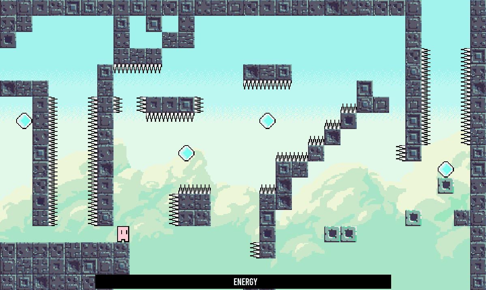

Dream of Flight
A 2D platformer game inspired by Matt Thorson's Celeste. Made in C# with my own custom game engine built on the MonoGame Framework(the framework used for Celeste).
[A] to move left, [D] to move right, [J] to jump, [K] to toggle flying.
Levels for this game are made using the level editor I made: Bambuu TileMap Editor
Download
Release 1.0.0Gameplay Video
Screenshots
